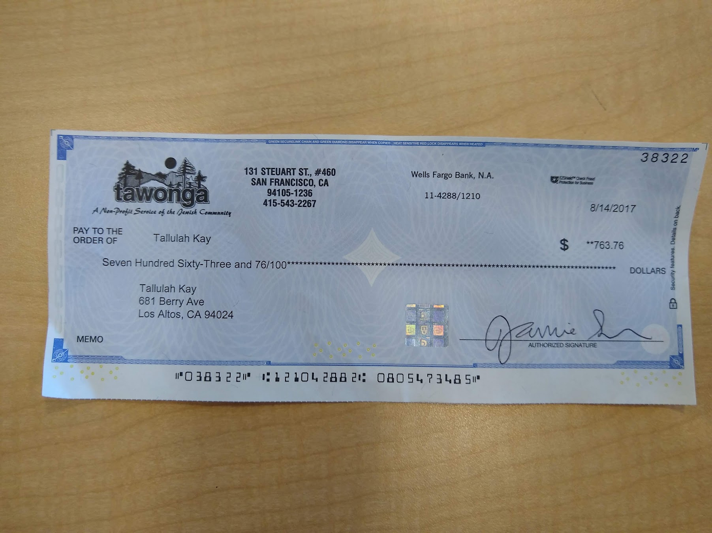
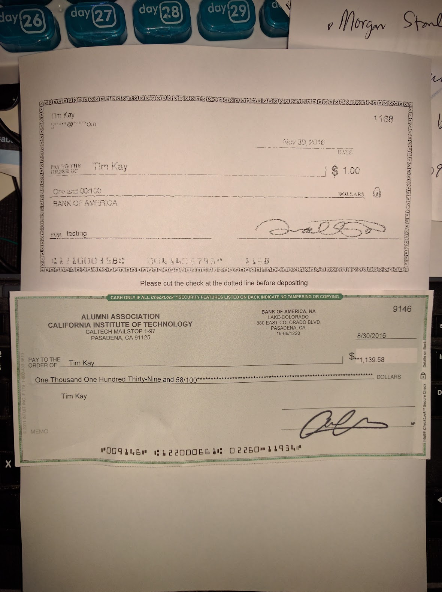

<canvas id="outputCanvas"></canvas>
<script src="https://docs.opencv.org/4.x/opencv.js"></script>
<script>
console.clear()
</script>
<script>

function go(img) {
    let src = cv.imread(img);
    segment(src);
    src.delete();
}

function adaptiveThreshold(src, blockSize = 25, C = 10) {
    let dst = new cv.Mat();
    cv.cvtColor(src, src, cv.COLOR_RGBA2GRAY, 0);
    cv.adaptiveThreshold(
        src,
        dst,
        255,
        cv.ADAPTIVE_THRESH_MEAN_C, // or cv.ADAPTIVE_THRESH_GAUSSIAN_C
        cv.THRESH_BINARY,
        blockSize,
        C
    );
    cv.imshow('outputCanvas', dst);
    dst.delete();
}

// function segment(src) {
//     let gray = new cv.Mat();
//     let binary = new cv.Mat();
    
//     // Convert to grayscale
//     cv.cvtColor(src, gray, cv.COLOR_RGBA2GRAY);
    
//     // Thresholding (Otsu's)
//     cv.threshold(gray, binary, 0, 255, cv.THRESH_BINARY + cv.THRESH_OTSU);
    
//     // Finding contours (segments)
//     let contours = new cv.MatVector();
//     let hierarchy = new cv.Mat();
//     cv.findContours(binary, contours, hierarchy, cv.RETR_EXTERNAL, cv.CHAIN_APPROX_SIMPLE);
    
//     // Draw segments
//     let segmented = cv.Mat.zeros(src.rows, src.cols, cv.CV_8UC3);
//     for (let i = 0; i < contours.size(); ++i) {
//         let color = new cv.Scalar(Math.random()*255, Math.random()*255, Math.random()*255);
//         cv.drawContours(segmented, contours, i, color, -1);
//     }
    
//     cv.imshow('outputCanvas', segmented);
    
//     // Cleanup
//     gray.delete();
//     binary.delete();
//     contours.delete();
//     hierarchy.delete();
//     segmented.delete();
// }

function segment(src) {
    let dst = new cv.Mat();
    cv.cvtColor(src, src, cv.COLOR_RGBA2GRAY, 0);
    cv.threshold(src, dst, 0, 255, cv.THRESH_BINARY + cv.THRESH_OTSU);
    cv.imshow('outputCanvas', dst);
    dst.delete();
}


</script>
